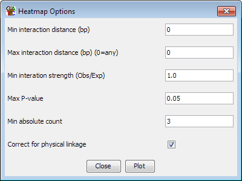

The HiC Heatmap Plot
The HiC heatmap plot is a global way of being able to look at the strengths
of interaction between different regions of the genome. It is only available
when the currently active DataStore is a HiC dataset.
You access this plot by selecting "Plots > HiC heatmap" you can
then choose whether the axes for the plot are shown as genomic coordinates,
or as sets of probe lists which you can then select.
The plot shows two copies of the genome at right angles to each other and
between these it draws a heatmap showing the density of paired reads which
fall into each interacting pair of regions in the plot. The potentially
interacting regions are taken from the currently active probe list.

To zoom into the plot you can simply drag a box within the main plot area. To
zoom out press the right mouse button. If you hold the control key while
zooming out only the x axis will zoom out. If you hold down shift then only
the y-axis will zoom out.
If you double click on any interaction point then one end of the interaction
will be shown in the main chromosome view. If you shift+double click then
the other end will be shown.
Options
There are a number of different filtering options which apply to this plot.
You can apply most of the filters either before the plot is calculated or
after it has been displayed. The filters you apply before calculating the
plot are hard limits which allow the program to immediately discard many of
the potential interactions to leave a manageable subset of interactions to
display. Many of the same options appear after the plot has been drawn
and these can be changed interactively, but at this stage the filters can only
be set to values more restrictive than those initially chosen when the plot
what calculated.
Pre-calculation options

-
You can choose which dataset and which probe list to use for the plot. The
dataset must have originally been imported as a HiC dataset.
- You can set a minimum and maximum range of distances over which
interactions will be considered. Entering no value removes the filter. If
any value is set for the maximum distance then all trans interactions will
be discarded.
- You can select the level of enrichment you want to see in your
interactions. Currently enrichment levels below 1 cannot be selected
- You can select a significance cutoff above which interactions will
not be shown
- You can set a minumum absolute number of observations which are required
for an interaction to be shown - even if it passes the enrichment and
significance filters
- You can choose whether the statisical model corrects the expected values
for physical linkage distance when considering cis interactions
Post-calculation options
Once the plot has been drawn you can adjust all of the values set in the
pre-calculation filters. In addition you have some more options.
-
You can use the 'Match Chr View' button to set the HiC plot to the
exact region current visible in the chromosme view.
-
When the region shown in the plot on the X or Y axis falls entirely within
the same chromosome you can use the "Send X" or "Send Y"
buttons to update the main SeqMonk chromosome view to the region currently
shown on the HiC plot X or Y axis.
- You can use the "Make Report" button to create an annotated
report of the interactions which pass the current set of filters
-
You can change the parameters used to colour your plot. By default this will
be the obs/exp value, but you can use the p-value, number of interactions or
the value associated with the underlying probe in the current quantitation.
-
You can choose to filter the interactions you're seeing to show only interactions
where at least one end matches a probe list which you select
- You can use the "Cluster interactions" button to perform a
hierarchical clustering of all of the interactions to bring together sets
of probes with similar interaction patterns across the whole genome. Once this
clustering has been performed you will then have the option to change the
clustering threshold to generate either tight or loosely coupled clusters. You
can also choose to save your clusters back to your original project as probe
lists.